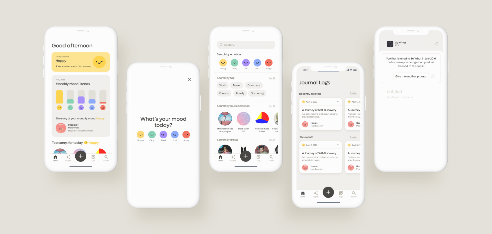
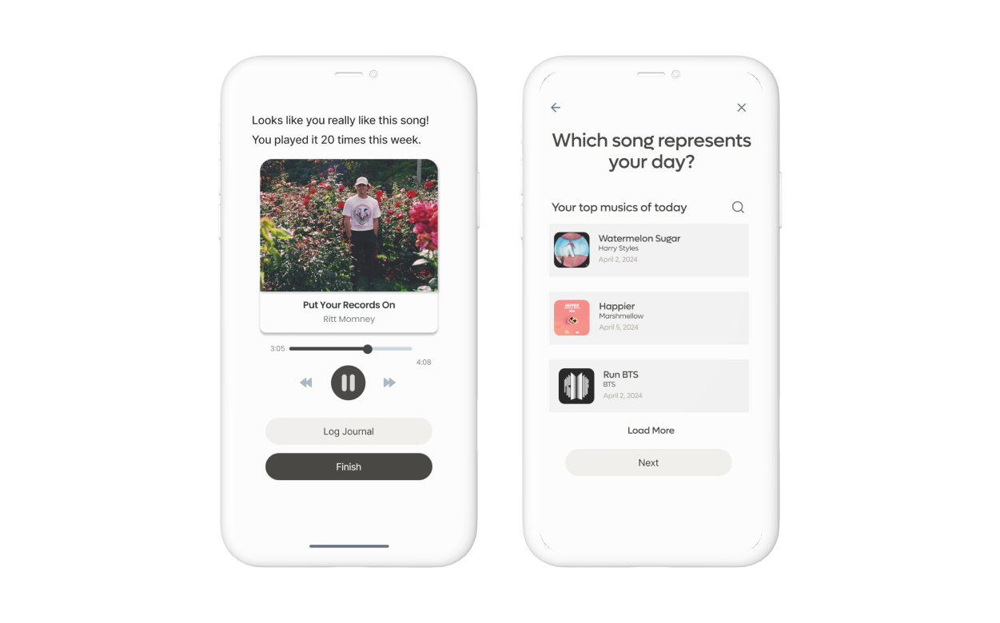
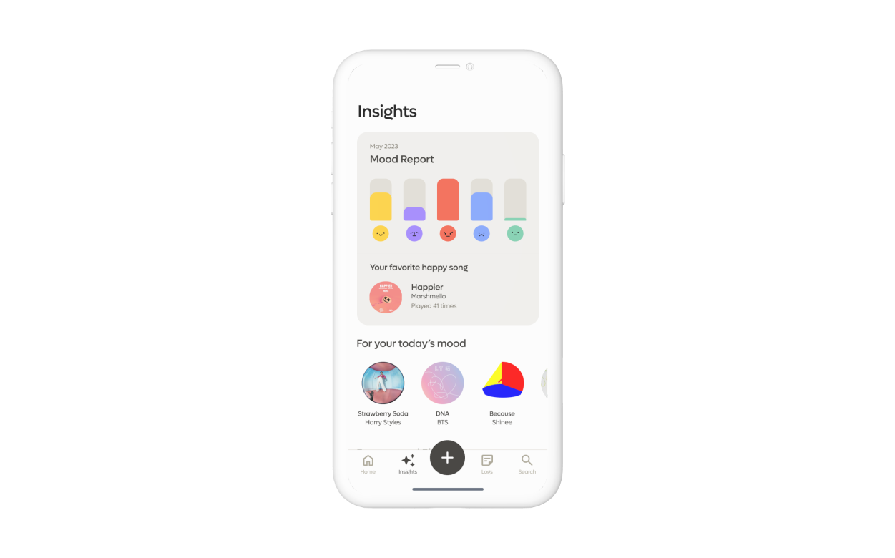
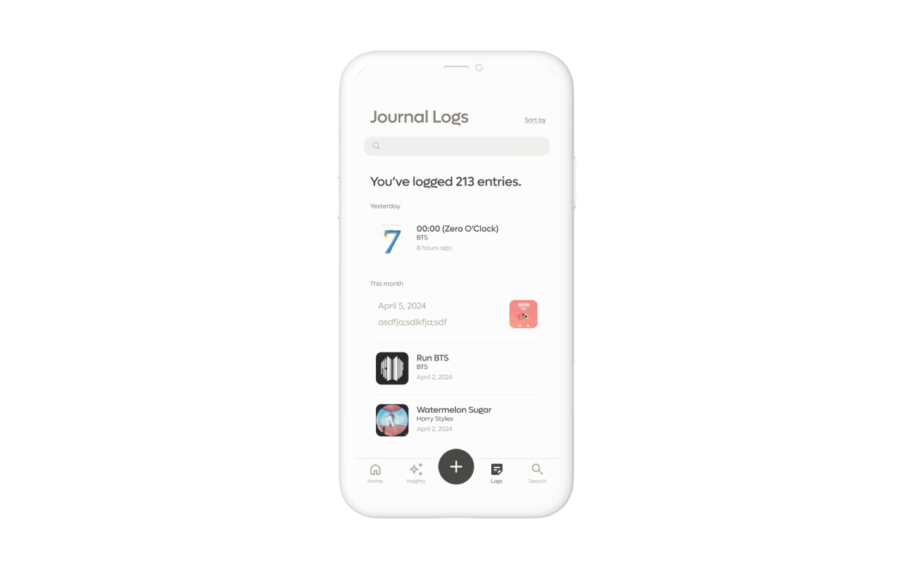

Melody
Music journaling app that helps reflecting on emotions tied to music and a time in your life
TEAM
Brenda Son
Yuri Kim
Minahil Kasher
Yuri Kim
Minahil Kasher
Tool
Figma & Figjam
Protopie
Adobe CC
Protopie
Adobe CC
Timeline
Mar–Apr 2023 (6 weeks)
Guide
Wenting Zhang
Context
Journaling as a life improvement tool
Journaling is a tool for self-care and mental health management. Journaling provides a private and non-judgmental space to explore these feelings and gain perspective on one's life.
Pain Points
Too busy to journal
Journaling requires a consistent commitment of time, which can be difficult to fit into a busy schedule. With many young people juggling school, work, and extracurricular activities, finding the time to journal regularly can be a challenge.
02
Time Commitment
03
Lack Motivation
Problem Statement
People don’t have time to reflect and write in their journals everyday.
Solution
Everyday journal with everyday music
An average person listens to 18.4 hours of music per week. More than 2/3 of adults between 18- and 34-years old listen to music every day. Memories are one of the important ways in which musical events evoke emotions. As the late physician Oliver Sacks has noted, musical emotions and musical memory can survive long after other forms of memory have disappeared. Part of the reason for the durable power of music appears to be that listening to music engages many parts of the brain, triggering connections and creating associations.Time perception. Music is a powerful emotional stimulus that changes our relationship with time
Journaling
Listening Musics
How might we help people reflect on their emotions and experiences based on the music they listen to?
Target Audiences
Gen Z and Millennials
The target audencese are Gen Z and Millennials music lovers - writers - people who feel emotion with music. This is because they are the age group who listening music is everyday routine, and
User Journey
Ideation
Focusing on the emotional journey of listening to music
With our new focus, my teammates and I brainstormed different design opportunities using Crazy 8, a design sprint method.
User Flow
After conducting a Crazy 8 ideation session, we set the main features of the app, and created the user flow to achieve the main goals of the users of the app.
Iterations
Major improvements through user feedbacks
We conducted an user testing to assess our design solutions.

Non-intuitive user flow
- Needed a specific focus and correlation for recognizable user patterns

Needs to improve UX writing
- The text was not easily comprehensible, and users did not fully understand its meaning.
- Using "Insights" as a main landing page makes more sense.

Misleading design forms
- Needed specific journal focus
- Instead of songs, users preferred to see a general summary including their writing entries
- Design forms can mislead users into their functions
01
Log journal entry
- Data of songs played / specific song data
- Data of Recently Played song list to journal about
02
Insights
- Monthly data of each emotions (e.g. “You logged Sad 6 times this month.”)
- Data of musics related to each emotions (e.g. “You listened this song most when you are happy.)
- Personalized recommendations: songs / playlists (based on mood)(e.g. Recommendations based on your today’s mood)